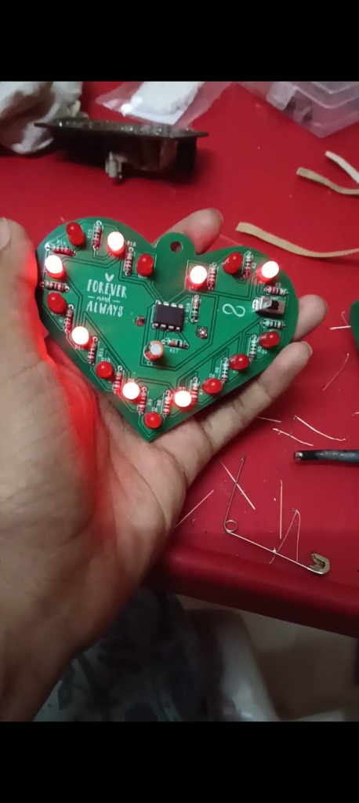
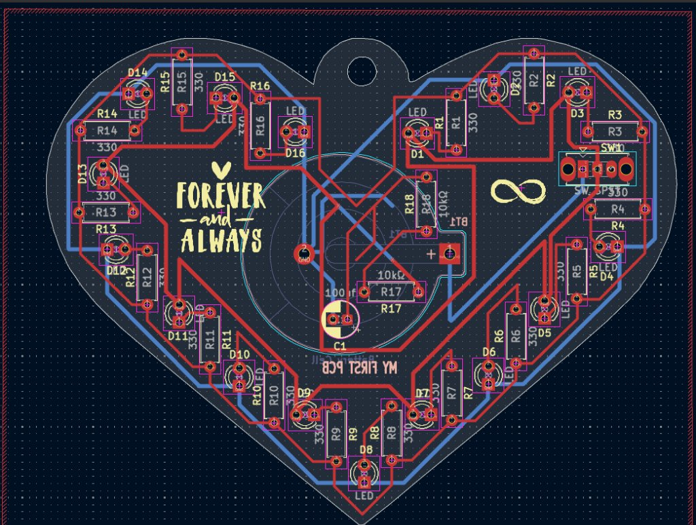
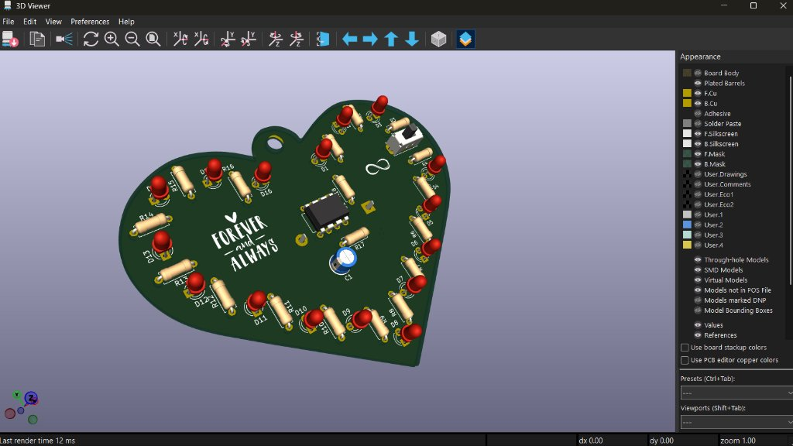
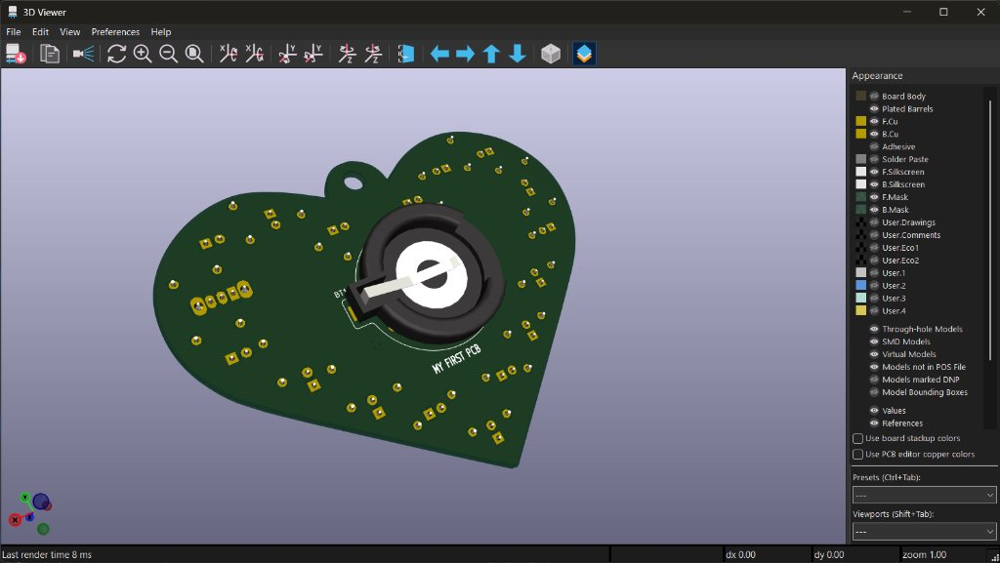

Custom Heart-Shaped LED PCB
PCB Design and Electronics • KiCad EDA"My first self-designed and fabricated PCB project. Designed the circuit schematic and PCB layout using KiCad, completed circuit checks and explored the complete process from circuit design to physical PCB fabrication."
Core IC & Logic
NE555 Precision Timer (Astable Mode)
Power Source
CR2450 3V Coin Cell Battery
Passives & Actuators
16x Through-Hole LEDs, Resistors, Cap
EDA & Simulation Tools
KiCad 8.0, Tinkercad, PCB Fab
// Technical Highlights & Engineering Execution:
- ▹ Schematic Design: Configured NE555 astable oscillator with RC timing network for pulse generation to drive heart perimeter LEDs.
- ▹ PCB Layout & Routing: Created custom heart outline, balanced 2-layer copper traces, routed power rails, and added custom silkscreen ("Forever and Always").
- ▹ Component Placement: Optimized radial symmetry of LED rings, integrated top-mount SPDT switch and reverse-mounted CR2450 coin cell battery retainer.
- ▹ Through-Hole Soldering: Hand soldered 16 LEDs, NE555 socket, resistors, and decoupling capacitors; inspected for solder bridges and verified polarity.
- ▹ Physical PCB Fabrication: Managed full fabrication workflow from Gerber generation and DRC validation to physical assembly and bench power testing.

Click to Inspect



4 Gallery Views: Fabricated Hardware • KiCad Routing • 3D Top • 3D Bottom